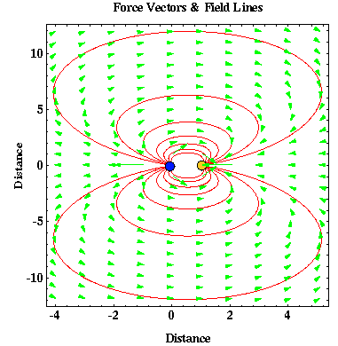

Field Lines for a Magnetic Dipole

Another way to visualize the magnetic force field associated with a magnetic dipole is to plot the field lines for the force. Field lines are nothing more than a set of lines drawn such that they are everywhere parallel to the direction of the force you are trying to describe, in this case the magnetic force. Shown to the right is the spatial variation of the magnetic force (green arrows)* associated with a magnetic dipole and a set of field lines (red lines) describing the force.
Notice that the red lines representing the field lines are always parallel to the force directions shown by the green arrows. The number and spacing of the red lines that we have chosen to show is arbitrary except for one factor. The position of the red lines shown has been chosen to qualitatively indicate the relative strength of the magnetic field. Where adjacent red lines are closely spaced, such as near the two monopoles (blue and yellow circles) comprising the dipole, the magnetic force is large. The greater the distance between adjacent red lines, the smaller the magnitude of the magnetic force.
*Unlike the force plots shown on the previous page, the arrows representing the force have not been rescaled. Thus, you can now see how rapidly the size of the force decreases with distance from the dipole. Small forces are represented only by an arrow head that is constant in size. In addition, please note that the vertical axis in the above plot covers a distance almost three times as large as the horizontal axis.